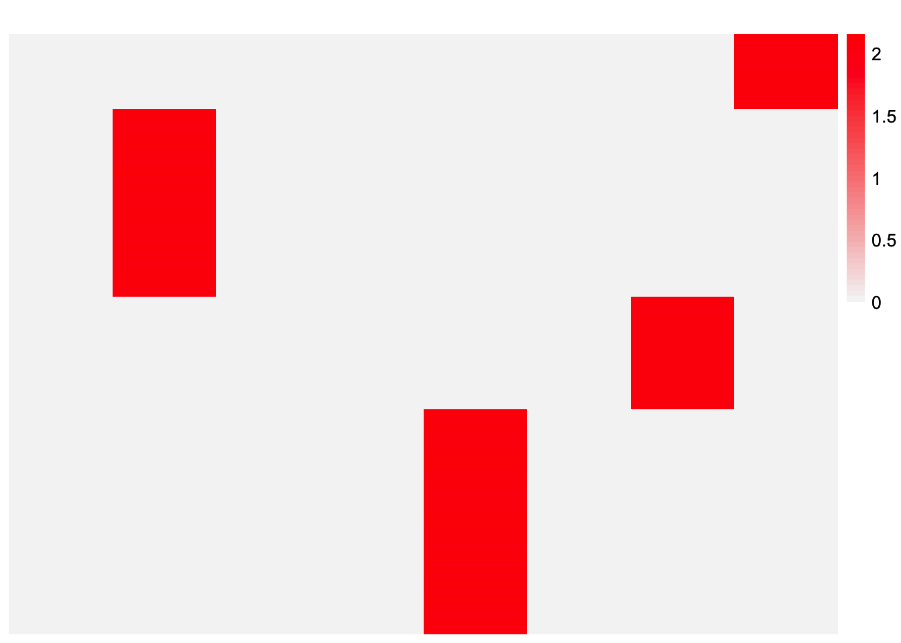
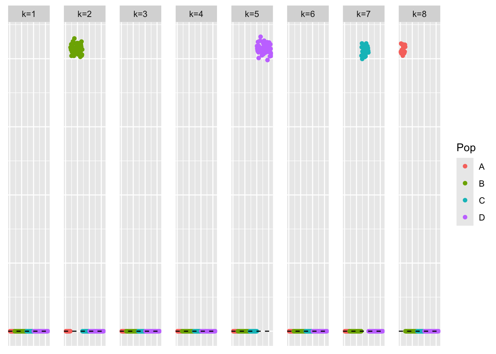
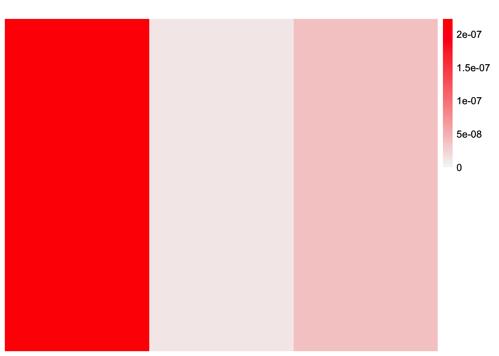
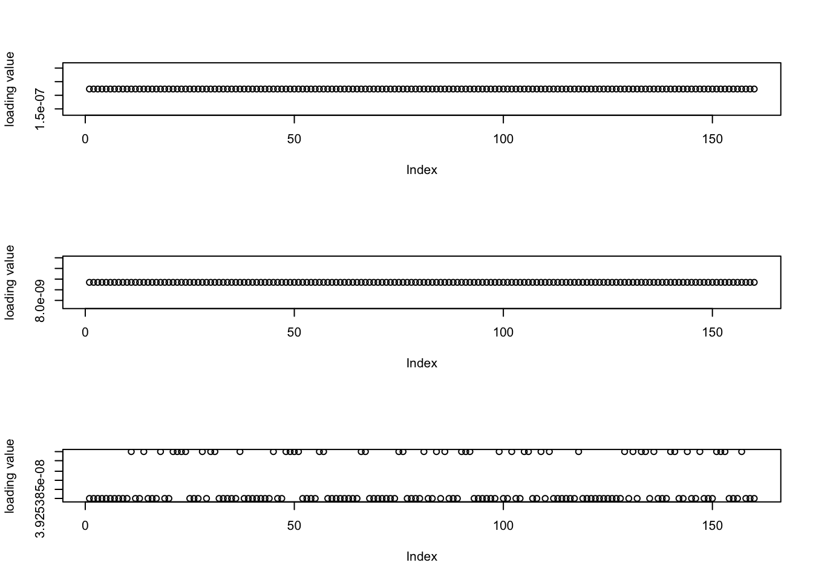
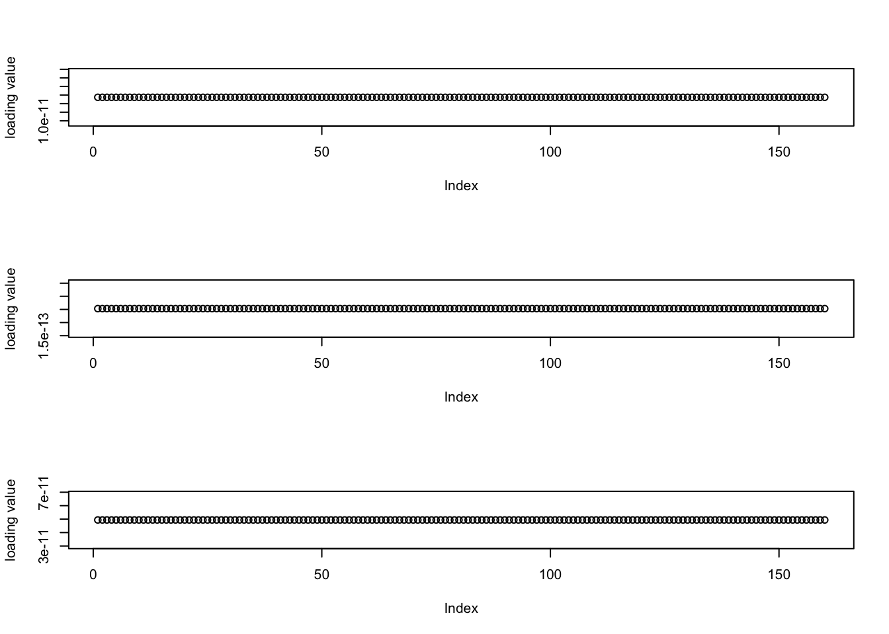
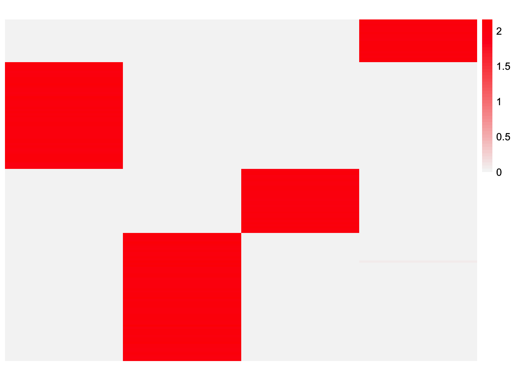
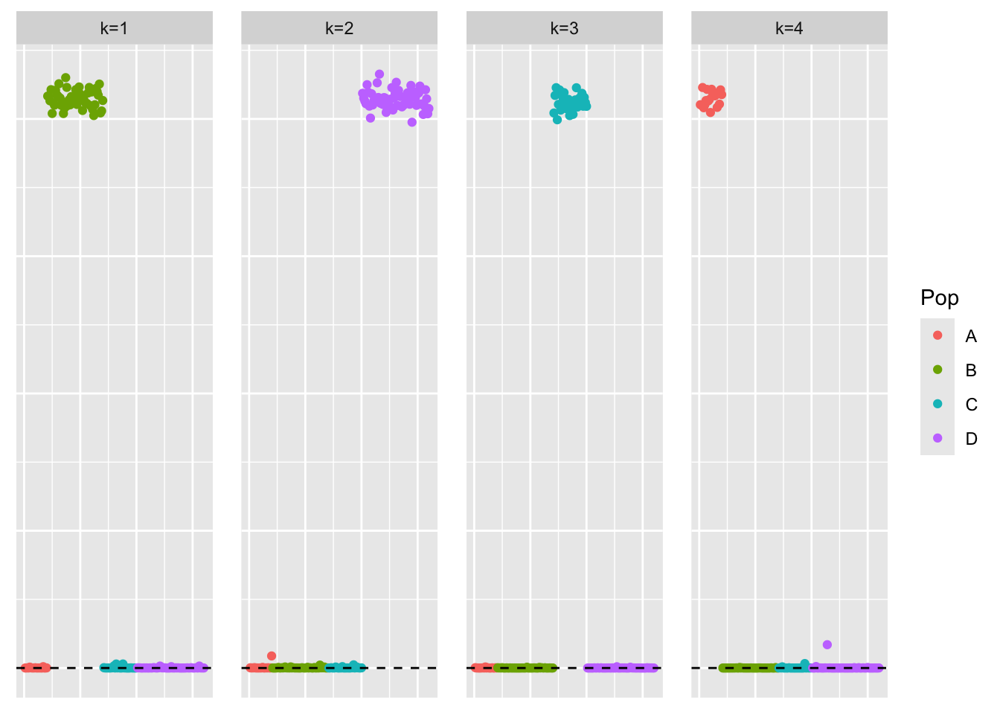
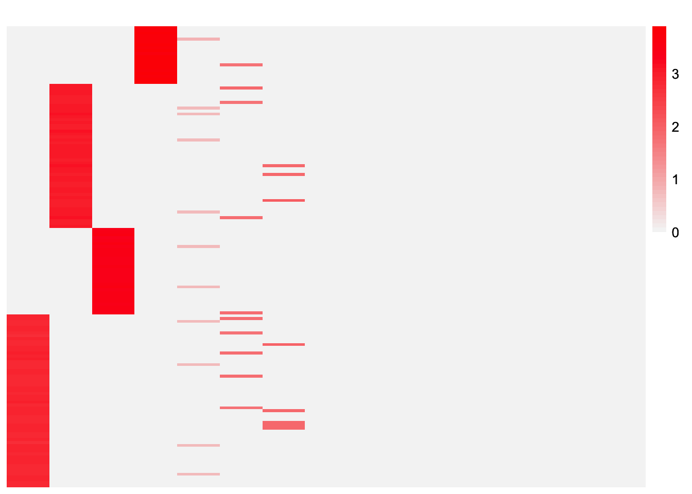
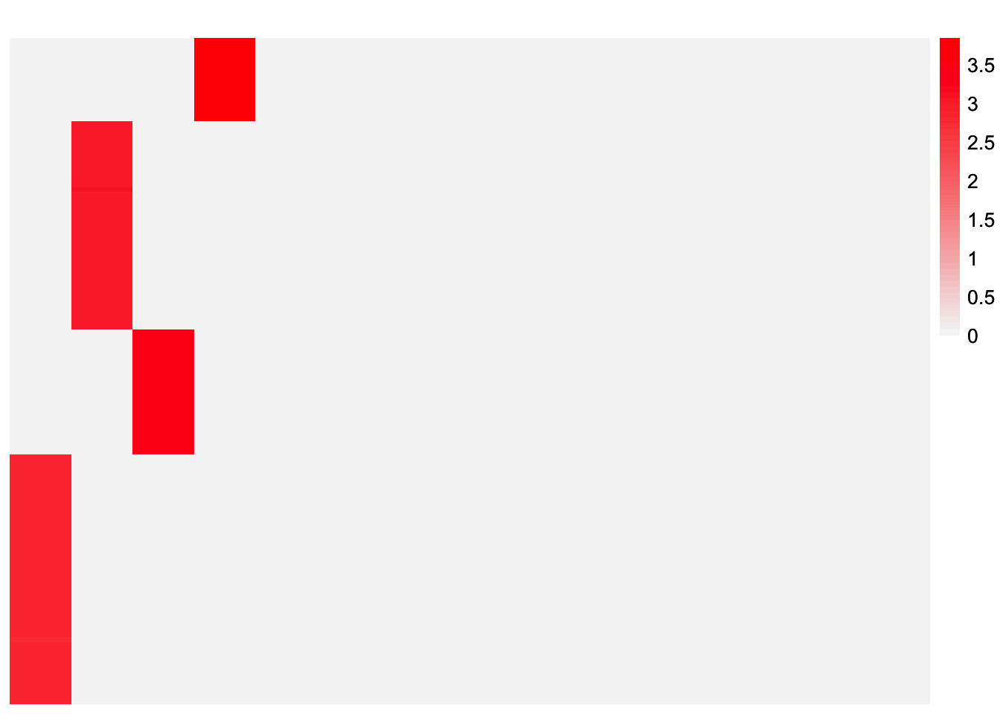

unbal_nonoverlap_pt_laplace_split_init_flash_normalf
Annie Xie
2025-09-24
Last updated: 2025-09-24
Checks: 7 0
Knit directory: covariance_decomps_dsc/
This reproducible R Markdown analysis was created with workflowr (version 1.7.1). The Checks tab describes the reproducibility checks that were applied when the results were created. The Past versions tab lists the development history.
Great! Since the R Markdown file has been committed to the Git repository, you know the exact version of the code that produced these results.
Great job! The global environment was empty. Objects defined in the global environment can affect the analysis in your R Markdown file in unknown ways. For reproduciblity it’s best to always run the code in an empty environment.
The command set.seed(20250203) was run prior to running
the code in the R Markdown file. Setting a seed ensures that any results
that rely on randomness, e.g. subsampling or permutations, are
reproducible.
Great job! Recording the operating system, R version, and package versions is critical for reproducibility.
Nice! There were no cached chunks for this analysis, so you can be confident that you successfully produced the results during this run.
Great job! Using relative paths to the files within your workflowr project makes it easier to run your code on other machines.
Great! You are using Git for version control. Tracking code development and connecting the code version to the results is critical for reproducibility.
The results in this page were generated with repository version 21d4f84. See the Past versions tab to see a history of the changes made to the R Markdown and HTML files.
Note that you need to be careful to ensure that all relevant files for
the analysis have been committed to Git prior to generating the results
(you can use wflow_publish or
wflow_git_commit). workflowr only checks the R Markdown
file, but you know if there are other scripts or data files that it
depends on. Below is the status of the Git repository when the results
were generated:
Ignored files:
Ignored: .DS_Store
Ignored: .Rhistory
Ignored: data/.DS_Store
Ignored: data/adclus_cov_comp_dsc_ex/.DS_Store
Ignored: data/adclus_same_init_dsc_ex/.DS_Store
Ignored: data/pt_laplace_split_init_ex/.DS_Store
Untracked files:
Untracked: analysis/init_comparison_baltree_setting.Rmd
Untracked: analysis/init_comparison_overlap_setting.Rmd
Note that any generated files, e.g. HTML, png, CSS, etc., are not included in this status report because it is ok for generated content to have uncommitted changes.
These are the previous versions of the repository in which changes were
made to the R Markdown
(analysis/overlap_pt_laplace_split_init_flash_normalf.Rmd)
and HTML
(docs/overlap_pt_laplace_split_init_flash_normalf.html)
files. If you’ve configured a remote Git repository (see
?wflow_git_remote), click on the hyperlinks in the table
below to view the files as they were in that past version.
| File | Version | Author | Date | Message |
|---|---|---|---|---|
| Rmd | 21d4f84 | Annie Xie | 2025-09-24 | Add analysis of flash with normal f with pt-laplace init in unbal nonoverlap |
Introduction
In this analysis, I investigate flash with a normal prior on \(F\) initialized with the point-Laplace plus splitting strategy in the unbalanced nonoverlapping setting. A surprising observation is that the estimate from this method returns extra factors. However, we would expect flash with a normal prior on \(F\) to return the correct number of factors because there is an argument in the flash paper which states the method is conservative with the number of factors it utilizes. In addition, the flash model is correctly specified in this simulation, so we don’t expect extra factors due to model misspecification. In this analysis, my aim is to explore why this happens. I did a similar investigation of flash with normal prior on \(F\) in the balanced nonoverlapping setting here
library(dplyr)
library(ggplot2)
library(pheatmap)
library(flashier)
library(ashr)source('code/visualization_functions.R')compute_L2_fit <- function(est, dat, with_diag = FALSE){
if (with_diag == FALSE){
score <- sum((dat - est)^2) - sum((diag(dat) - diag(est))^2)
}
else{
score <- sum((dat - est)^2)
}
return(score)
}Flash with Normal Prior on F (with backfitting)
group_nonoverlap_2 <- readRDS("data/group_nonoverlap_2.rds")
group_nonoverlap_2_pt_laplace_split_1_flash_normalf_1 <- readRDS("data/adclus_same_init_dsc_ex/group_nonoverlap_2_pt_laplace_split_1_flash_normalf_1.rds")Visualization of Estimate
This is a heatmap of the true \(L\) that we are hoping to recover:
plot_heatmap(group_nonoverlap_2$true_L)
This is a heatmap of \(\hat{L}\), the estimate for \(L\) from Flashier with normal prior on \(F\):
plot_heatmap(group_nonoverlap_2_pt_laplace_split_1_flash_normalf_1$est_L, brks = seq(0, max(group_nonoverlap_2_pt_laplace_split_1_flash_normalf_1$est_L), length.out = 50))
This is a scatterplot of the entries of \(\hat{L}\):
pops_vec <- c(rep('A', 20), rep('B', 50), rep('C', 30), rep('D', 60))
plot_loadings(group_nonoverlap_2_pt_laplace_split_1_flash_normalf_1$est_L, pops_vec)
As previously mentioned, the loadings estimate returns extra factors. Interestingly, these extra factors don’t seem to add much – in these visualizations, the factors look like zero vectors.
Visualizations of trivial factors
This is a heatmap of the trivial factors:
trivial.idx <- c(1,3,4)
plot_heatmap(group_nonoverlap_2_pt_laplace_split_1_flash_normalf_1$est_L[,trivial.idx], brks = seq(0, max(group_nonoverlap_2_pt_laplace_split_1_flash_normalf_1$est_L[,trivial.idx]), length.out = 50))
This is a plot of the entries of each of the trivial factors:
par(mfrow = c(3,1))
for (i in trivial.idx){
plot(group_nonoverlap_2_pt_laplace_split_1_flash_normalf_1$est_L[,i], ylab = 'loading value')
}
par(mfrow = c(1,1))We see that these factors contain very small entries.
Try further backfitting
I test if further backfitting will zero out these factors. Theoretically, it should, but based off my previous experience, I am not sure that it will.
fl <- group_nonoverlap_2_pt_laplace_split_1_flash_normalf_1$fit_obj
fl_more_backfit <- flash_backfit(fl, maxiter = 50000, tol = 10^(-20))Backfitting 8 factors (tolerance: 1.00e-20)...
Difference between iterations is within 1.0e-09...
Wrapping up...
Done.fl_more_backfit <- flash_nullcheck(fl_more_backfit)Nullchecking 8 factors...
Done.fl_more_backfit$n_factors[1] 8fl_more_backfit_scaled <- ldf(fl_more_backfit)
fl_more_backfit_scaled_L <- fl_more_backfit_scaled$L %*% diag(sqrt(fl_more_backfit_scaled$D))This is a plot of the entries of each of the trivial factors:
par(mfrow = c(3,1))
for (i in trivial.idx){
plot(fl_more_backfit_scaled_L[,i], ylab = 'loading value')
}
par(mfrow = c(1,1))Backfitting did make the factors smaller. However, the method still does not remove these factors.
Try flash_nullcheck
I also test if the flash nullcheck function will zero out these factors. Theoretically, it should, but based off my previous experience, I am not sure that it will.
fl_nullcheck <- flash_nullcheck(fl)Nullchecking 8 factors...
Done.fl_nullcheck$n_factors[1] 8The flash nullcheck function did not remove any factors.
Exploring the effect of the trivial factors
This is the Frobenius norm of the difference between \(\hat{L}\hat{F}'\) and \(Y\) without the trivial factors:
compute_L2_fit(tcrossprod(group_nonoverlap_2_pt_laplace_split_1_flash_normalf_1$fit_obj$L_pm[,-trivial.idx], group_nonoverlap_2_pt_laplace_split_1_flash_normalf_1$fit_obj$F_pm[, -trivial.idx]), group_nonoverlap_2$data$Y)[1] 156644.5Not including the trivial factors does not significantly change the fit.
These are the KL divergence values:
group_nonoverlap_2_pt_laplace_split_1_flash_normalf_1$fit_obj$flash_fit$KL[[1]]
[1] 55.45177 -114.22333 55.45177 55.45177 -134.80657 55.45177 -63.65840
[8] -32.84148
[[2]]
[1] 0.000000e+00 -2.683920e+03 0.000000e+00 -1.818989e-12 -2.774399e+03
[6] 0.000000e+00 -2.421675e+03 -2.226945e+03The (negative) KL values for the trivial loadings are 55.45177 and the (negative) KL values for the corresponding factors are 0. This means that including these extra factors increases the objective function. In theory, the negative KL should not be negative, so maybe there’s an optimization issue?
Point-Exponential Prior
For comparison, I test the method with the point-exponential prior.
group_nonoverlap_2_pt_laplace_split_1_flash_normalf_2 <- readRDS("data/symnmf_same_init_dsc_ex/group_nonoverlap_2_pt_laplace_split_1_flash_normalf_2.rds")Visualization of Estimate
This is a heatmap of \(\hat{L}\), the estimate for \(L\) from Flashier with normal prior on \(F\) and point-exponential prior on \(L\):
plot_heatmap(group_nonoverlap_2_pt_laplace_split_1_flash_normalf_2$est_L, brks = seq(0, max(group_nonoverlap_2_pt_laplace_split_1_flash_normalf_2$est_L), length.out = 50))
This is a scatterplot of the entries of \(\hat{L}\):
pops_vec <- c(rep('A', 20), rep('B', 50), rep('C', 30), rep('D', 60))
plot_loadings(group_nonoverlap_2_pt_laplace_split_1_flash_normalf_2$est_L, pops_vec)
This estimate does not return any extra factors. So I wonder if the trivial factors stem from an optimization issue with the generalized binary prior.
Testing how many factors flash wants to add
Generalized Binary
flash_normalf_gb_largeK_fit <- flash_init(group_nonoverlap_2$data$Y) %>%
flash_greedy(Kmax = 15, ebnm_fn = c(ebnm::ebnm_generalized_binary, ebnm_normal)) %>%
flash_backfit(maxiter = 10000, tol = 10^(-20)) %>%
flash_nullcheck()Adding factor 1 to flash object...
Adding factor 2 to flash object...
Adding factor 3 to flash object...
Adding factor 4 to flash object...
Adding factor 5 to flash object...
Adding factor 6 to flash object...
Adding factor 7 to flash object...
Adding factor 8 to flash object...
Adding factor 9 to flash object...
Adding factor 10 to flash object...
Adding factor 11 to flash object...
Adding factor 12 to flash object...
Adding factor 13 to flash object...
Adding factor 14 to flash object...
Adding factor 15 to flash object...
Wrapping up...
Done.
Backfitting 15 factors (tolerance: 1.00e-20)...
Difference between iterations is within 1.0e+03...
Difference between iterations is within 1.0e+02...
Difference between iterations is within 1.0e+01...
Difference between iterations is within 1.0e+00...
Difference between iterations is within 1.0e-01...
Wrapping up...
Done.
Nullchecking 15 factors...
Done.This is a heatmap of the loadings estimate:
plot_heatmap(flash_normalf_gb_largeK_fit$L_pm)
This estimate returns extra factors. That is unexpected given the argument that flashier is conservative with the number of factors.
A more strict version of generalized binary
ebnm_generalized_binary_fix_scale <- function(x, s, mode = 'estimate', g_init = NULL, fix_g = FALSE, output = ebnm_output_default(), control = NULL){
ebnm_gb_output <- ebnm::ebnm_generalized_binary(x = x, s = s, mode = mode,
scale = 0.01,
g_init = g_init, fix_g = fix_g,
output = output, control = control)
return(ebnm_gb_output)
}flash_normalf_binary_largeK_fit <- flash_init(group_nonoverlap_2$data$Y) %>%
flash_greedy(Kmax = 15, ebnm_fn = c(ebnm_generalized_binary_fix_scale, ebnm_normal)) %>%
flash_backfit(maxiter = 10000, tol = 10^(-20)) %>%
flash_nullcheck()Adding factor 1 to flash object...
Adding factor 2 to flash object...
Adding factor 3 to flash object...
Adding factor 4 to flash object...
Adding factor 5 to flash object...
Adding factor 6 to flash object...
Adding factor 7 to flash object...
Adding factor 8 to flash object...
Adding factor 9 to flash object...
Adding factor 10 to flash object...
Adding factor 11 to flash object...
Adding factor 12 to flash object...
Adding factor 13 to flash object...
Adding factor 14 to flash object...
Adding factor 15 to flash object...
Wrapping up...
Done.
Backfitting 15 factors (tolerance: 1.00e-20)... Difference between iterations is within 1.0e+02... Difference between iterations is within 1.0e+01... Difference between iterations is within 1.0e+00... Difference between iterations is within 1.0e-01... Difference between iterations is within 1.0e-02... Difference between iterations is within 1.0e-03... Difference between iterations is within 1.0e-04... Difference between iterations is within 1.0e-05... Difference between iterations is within 1.0e-06...
Wrapping up...
Done.
Nullchecking 15 factors...
Done.This is a heatmap of the loadings estimate:
plot_heatmap(flash_normalf_binary_largeK_fit$L_pm)
Point-Exponential
flash_normalf_pexp_largeK_fit <- flash_init(group_nonoverlap_2$data$Y) %>%
flash_greedy(Kmax = 15, ebnm_fn = c(ebnm::ebnm_point_exponential, ebnm_normal)) %>%
flash_backfit(maxiter = 10000, tol = 10^(-20)) %>%
flash_nullcheck()Adding factor 1 to flash object...
Adding factor 2 to flash object...
Adding factor 3 to flash object...
Adding factor 4 to flash object...
Adding factor 5 to flash object...
Factor doesn't significantly increase objective and won't be added.
Wrapping up...
Done.
Backfitting 4 factors (tolerance: 1.00e-20)...
Difference between iterations is within 1.0e+03...
Difference between iterations is within 1.0e+02...
Difference between iterations is within 1.0e+01...
Difference between iterations is within 1.0e+00...
Difference between iterations is within 1.0e-01...
Difference between iterations is within 1.0e-02...
Difference between iterations is within 1.0e-03...
Difference between iterations is within 1.0e-04...
Difference between iterations is within 1.0e-05...
Difference between iterations is within 1.0e-06...
Difference between iterations is within 1.0e-07...
Difference between iterations is within 1.0e-08...
Difference between iterations is within 1.0e-09...
Difference between iterations is within 1.0e-10...
Wrapping up...
Done.
Nullchecking 4 factors...
Done.This is a heatmap of the loadings estimate:
plot_heatmap(flash_normalf_pexp_largeK_fit$L_pm)This estimate does not return extra factors.
Archive - Binormal prior
sessionInfo()R version 4.3.2 (2023-10-31)
Platform: aarch64-apple-darwin20 (64-bit)
Running under: macOS 15.6
Matrix products: default
BLAS: /Library/Frameworks/R.framework/Versions/4.3-arm64/Resources/lib/libRblas.0.dylib
LAPACK: /Library/Frameworks/R.framework/Versions/4.3-arm64/Resources/lib/libRlapack.dylib; LAPACK version 3.11.0
locale:
[1] en_US.UTF-8/en_US.UTF-8/en_US.UTF-8/C/en_US.UTF-8/en_US.UTF-8
time zone: America/Chicago
tzcode source: internal
attached base packages:
[1] stats graphics grDevices utils datasets methods base
other attached packages:
[1] ashr_2.2-66 flashier_1.0.56 ebnm_1.1-34 pheatmap_1.0.12
[5] ggplot2_3.5.2 dplyr_1.1.4 workflowr_1.7.1
loaded via a namespace (and not attached):
[1] tidyselect_1.2.1 viridisLite_0.4.2 farver_2.1.2
[4] fastmap_1.2.0 lazyeval_0.2.2 promises_1.3.3
[7] digest_0.6.37 lifecycle_1.0.4 processx_3.8.4
[10] invgamma_1.1 magrittr_2.0.3 compiler_4.3.2
[13] rlang_1.1.6 sass_0.4.10 progress_1.2.3
[16] tools_4.3.2 yaml_2.3.10 data.table_1.17.6
[19] knitr_1.50 prettyunits_1.2.0 labeling_0.4.3
[22] htmlwidgets_1.6.4 scatterplot3d_0.3-44 RColorBrewer_1.1-3
[25] Rtsne_0.17 withr_3.0.2 purrr_1.0.4
[28] grid_4.3.2 git2r_0.33.0 fastTopics_0.6-192
[31] colorspace_2.1-1 scales_1.4.0 gtools_3.9.5
[34] cli_3.6.5 rmarkdown_2.29 crayon_1.5.3
[37] generics_0.1.4 RcppParallel_5.1.10 rstudioapi_0.16.0
[40] httr_1.4.7 pbapply_1.7-2 cachem_1.1.0
[43] stringr_1.5.1 splines_4.3.2 parallel_4.3.2
[46] softImpute_1.4-3 vctrs_0.6.5 Matrix_1.6-5
[49] jsonlite_2.0.0 callr_3.7.6 hms_1.1.3
[52] mixsqp_0.3-54 ggrepel_0.9.6 irlba_2.3.5.1
[55] horseshoe_0.2.0 trust_0.1-8 plotly_4.11.0
[58] jquerylib_0.1.4 tidyr_1.3.1 glue_1.8.0
[61] ps_1.7.7 cowplot_1.1.3 uwot_0.2.3
[64] stringi_1.8.7 Polychrome_1.5.1 gtable_0.3.6
[67] later_1.4.2 quadprog_1.5-8 tibble_3.3.0
[70] pillar_1.10.2 htmltools_0.5.8.1 truncnorm_1.0-9
[73] R6_2.6.1 rprojroot_2.0.4 evaluate_1.0.4
[76] lattice_0.22-6 RhpcBLASctl_0.23-42 SQUAREM_2021.1
[79] httpuv_1.6.15 bslib_0.9.0 Rcpp_1.0.14
[82] deconvolveR_1.2-1 whisker_0.4.1 xfun_0.52
[85] fs_1.6.6 getPass_0.2-4 pkgconfig_2.0.3